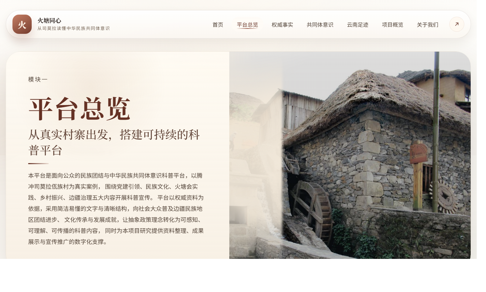
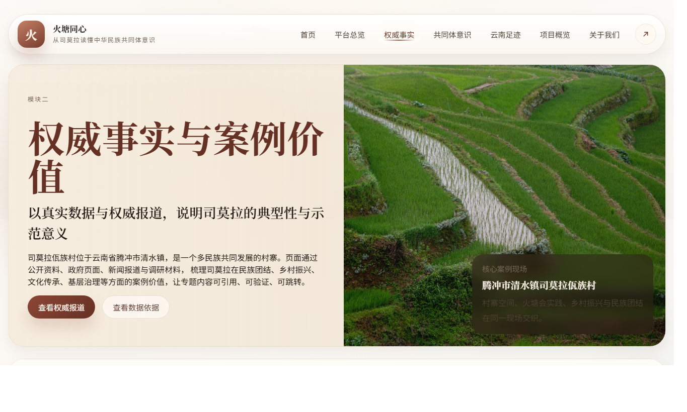
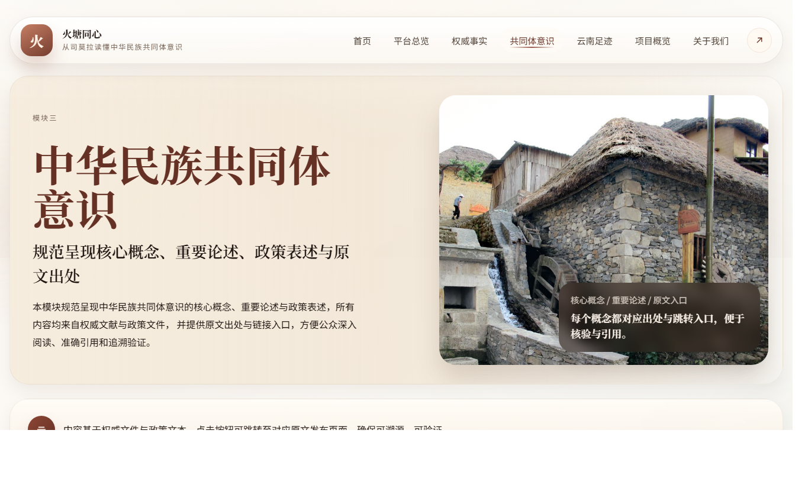
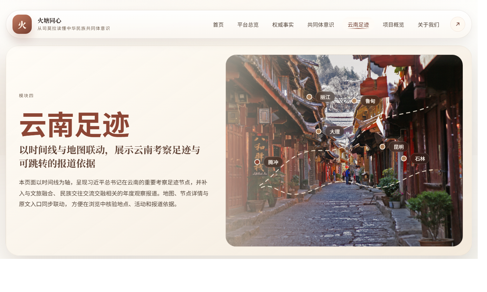
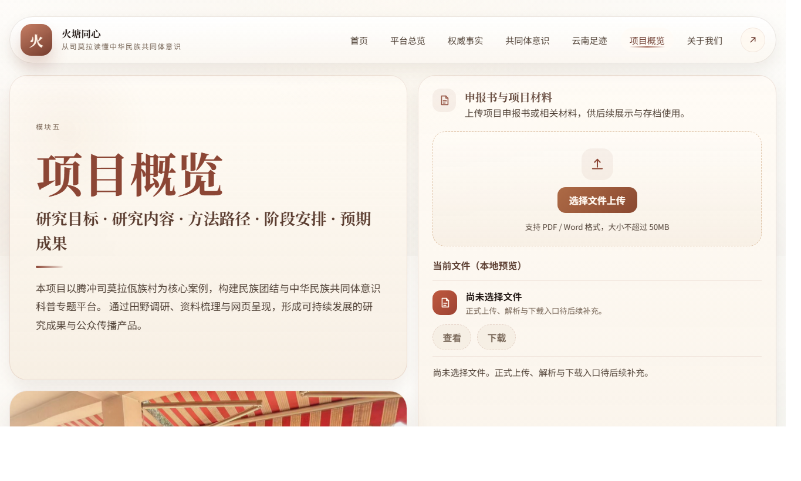
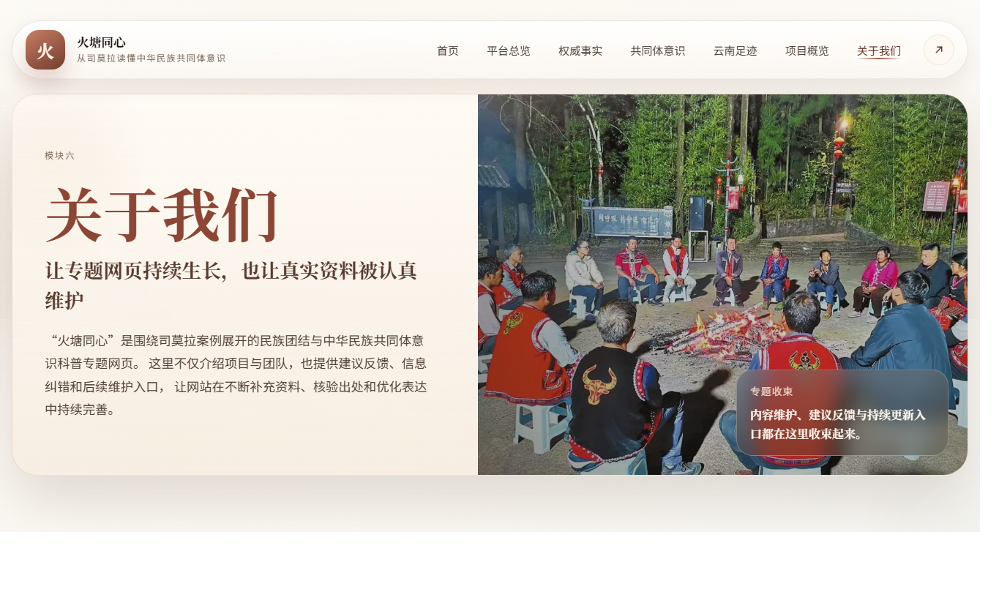

专题首页
火塘同心
从司莫拉读懂中华民族共同体意识
以腾冲司莫拉佤族村为真实案例，呈现边疆民族地区团结进步、文化传承与发展成就， 让抽象政策理念转化为可感知、可理解、可传播的科普内容。
专题首页
以腾冲司莫拉佤族村为真实案例，呈现边疆民族地区团结进步、文化传承与发展成就， 让抽象政策理念转化为可感知、可理解、可传播的科普内容。
专题入口
围绕平台总览、权威事实、共同体意识、云南足迹、项目概览与关于我们六个页面展开专题阅读。

了解平台定位、项目意义、内容结构与可持续扩展路径。
查看详情
梳理司莫拉的典型性与案例价值，用真实资料增强说服力。
查看详情
规范呈现核心概念、重要论述、政策表述与原文出处。
查看详情
按年份展示云南调研与考察足迹，点击地点可进入对应报道。
查看详情
呈现研究目标、研究内容、方法路径、阶段安排与预期成果。
查看详情
展示团队说明、项目维护原则、建议入口与信息纠错入口。
查看详情